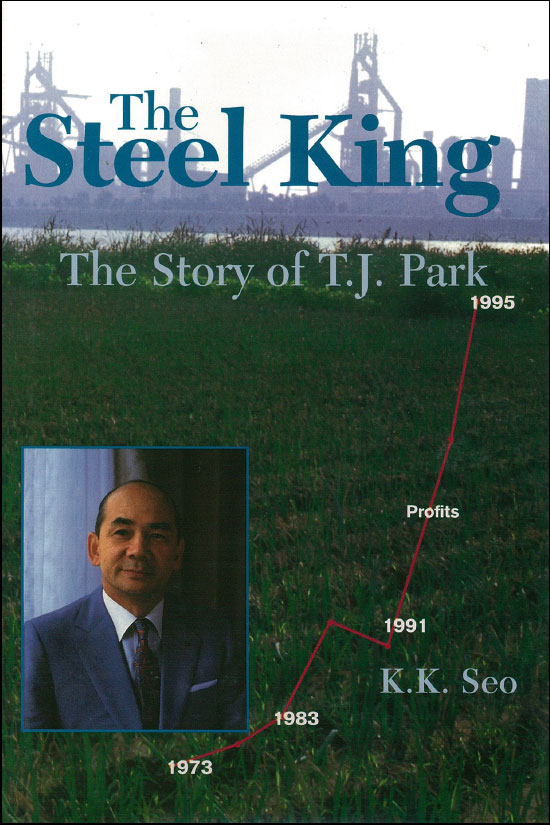

POSTECH Tae-Joon Park Institute
What should we do
for the better future of
the nation and mankind?
We examine the future of society and its strategic responses, and systematically study the spirit and leadership of Tae-Joon Park so that they may serve the wider public.
“국가와 인류의 더 나은 미래를 위하여 무엇을 할 것인가?”

Empire of the Intellect — A Global History of the Modern Research University
In 2026 the Institute published volume 14 of the Future Strategy Research Series, a global history of the modern research university.
Introduce
Carrying forward the spirit of
Chairman Tae-Joon Park
Chairman Tae-Joon Park held that industry and education are the core of national development. He founded POSCO and POSTECH, and led a renaissance in both the Korean economy and Korean scholarship, believing that “education is the most important investment a nation can make in its future.”
The Institute inherits that conviction and analyses the challenges universities and society will face. It pursues two central goals: to formulate POSTECH's medium- and long-term development strategy, and to study the spirit and leadership of Tae-Joon Park and pass them on to the next generation.
Director, Tae-Joon Park Institute Minseok Song
2013founded
Established on 15 February 2013 by resolution of the POSTECH Board of Trustees
14volumes
Future Strategy Research Series — interdisciplinary studies of key future agendas
8volumes
TJ Park Research Series — systematic study of his life, thought and leadership
Research & Programs
Four strands of work
Future Strategy Research
Grounded in the “TJ Park spirit”, we identify the critical problems society will face and propose directions for responding to them.
Explore 02TJ Park Research
Philosophy, sociology, psychology, political science, management and economics converge on the analysis of his life and thought.
Explore 03Youth Programs
Through the student essay contest and the POSTECH Vision Camp, we help the next generation ask and answer their own questions.
Programs 04Forums & Seminars
Experts from industry, academia, research institutes and government meet to debate the nation's future development.
EventsPublications
Research Series
The Future Strategy and TJ Park research series share the Institute's findings with society.
- FS 14
Empire of the Intellect
A global history of the research university · 2026
- FS 13

Pandemic and Korea's Great Transition
POSTECH et al. · 2021
- FS 12

Another Intelligence, the Next Fifty Years
Byoung-Tak Zhang et al. · 2019
- FS 11

A Blocked Society and Its Exits
Won-Taek Kang et al. · 2019
- FS 09

Civil Society and Democracy beyond the Candlelight
Pyung-Joong Yoon et al. · 2018
- TJ

Park Tae-Joon: A Biography
Dae-Hwan Lee · 2016
- TJ

The Steel King: The Story of T.J. Park
K.K. Seo · Simon & Schuster
- TJ 01

Taejoonism
Dae-Hwan Lee et al. · 2012
Life’s Chungam
The Life of TJ Park
“A short life, for the eternal homeland.” His journey, period by period.
1927–1947
A colonial boyhood
Born in Gijang, Busan; raised and schooled in Japan, where discrimination took root as a resolve to surpass it.
1948–1960
The soldier's years
Returning after liberation, he joined the military and learned organisation and principle on the ground of national reconstruction.
1961–1967
The call
He committed his life to the modernisation of the country and took on the mission of building an integrated steelworks.
1968–1992
Steel for the nation
On barren ground he founded POSCO and grew it into one of the world's finest steel companies.
1993–2000
Education for the nation
He founded fourteen schools and POSTECH, Korea's first research university, opening a new era in Korean education.
2001–2011
To the last
He kept thinking about the country's future until his death on 13 December 2011, at the age of 84.
“A short life,
for the eternal homeland.”CHUNGAM PARK TAE-JOON (1927–2011)
News
Institute News
- NOTICEForum: “The Future of Cities — Space and Industry”2023.01.16
- PRESSMOU with the Institute for Future Convergence, Changwon National University2022.05.30
- WEBZINEThe history of the university and its social role ahead2022.05.24
- PRESSUniversity R&D at risk — the case for expanded investment2021.07.09
[Future Strategy 13] Pandemic and Korea's Great Transition
How should Korean society address the income inequality deepened by COVID-19? The volume's core arguments, in brief.
TJ Future Strategy Column
Receive the Institute's future-strategy columns by email.
Read the columns →